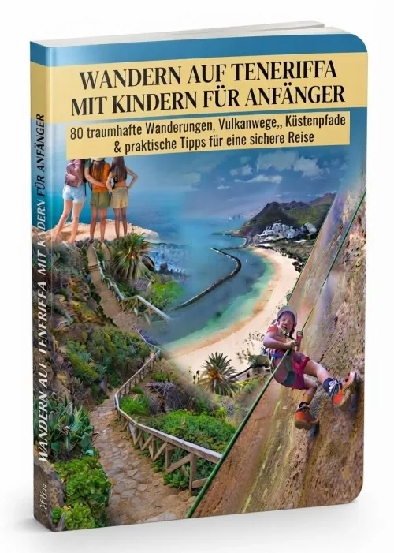

Reisen & Familie · Werbung
Teneriffa mit Kindern wandern: Was der digitale Guide enthält
Der deutschsprachige digitale Wanderführer kündigt 80 Wanderideen für Familien an. Die Verkaufsseite nennt Waldwege, Küstenpfade und Vulkanlandschaften sowie Hinweise zu Ausrüstung, Pausen und Wetter. Die einzelnen Routen konnten wir ohne Kauf nicht prüfen.
Angebot ansehenWerbung: Bei einem Kauf über diesen Link erhalten wir eine Provision. Der Preis ändert sich dadurch nicht.

Das ist laut Anbieter enthalten
- Laut Anbieter 80 Wanderideen für Familien auf Teneriffa.
- Themen: Küstenwege, Wälder, Vulkanlandschaften und Aussichtspunkte.
- Hinweise zur Auswahl passender Strecken sowie zu Wasser, Sonnenschutz und Wetter.
- Digitaler Download; kein physischer Versand.
Quelle: Angebots- und Bestellseite des Anbieters, abgerufen am 12.10.2026.
Für wen passt das Angebot?
Geeignet als Ideensammlung für Eltern, die ihre Ausflüge selbst planen. Eine Route ist erst dann familiengeeignet, wenn Länge, Höhenmeter, Untergrund, Wetter und Tagesform zum jüngsten Kind passen. Für verbindliche aktuelle Wegdaten brauchst du zusätzlich offizielle lokale Informationen.
Unser praktischer Kauf-Check
Prüfe jede geplante Strecke kurz vor dem Start: Wegsperrungen, Wetterwarnungen, Höhenlage, Schatten und Rückweg. Plane ausreichend Wasser, Sonnenschutz und eine Abbruchmöglichkeit ein. Ein Guide kann die aktuelle Prüfung vor Ort nicht ersetzen.
Grenzen und offene Fragen
Die 80 Routen und ihre Eignung wurden von uns nicht einzeln geprüft. Die Bestellseite nennt 12,99 € Produktpreis zuzüglich 19 % MwSt. und zeigt 15,46 € als Gesamtbetrag (Stand 12.10.2026); der angezeigte Endbetrag im Checkout ist maßgeblich. Angaben zu Updates und konkreten Dateiformaten bleiben offen.
Preis und Leistungsumfang können sich ändern. Prüfe die Angaben vor einer Bestellung direkt beim Anbieter.
Häufige Fragen
Sind alle 80 Touren für jedes Alter geeignet?
Das lässt sich aus der Verkaufsseite nicht ableiten. Wähle jede Tour nach Kondition, Wegbeschaffenheit und aktuellem Wetter aus.
Bekomme ich ein gedrucktes Buch?
Die Bestellseite beschreibt einen digitalen Download und keinen Versand.
Reicht der Guide für die Sicherheit unterwegs?
Nein. Aktuelle Sperrungen, Warnungen und örtliche Regeln solltest du zusätzlich vor jeder Tour prüfen.
Weitere Informationen
Details beim Anbieter prüfen
Sieh dir Produktumfang, aktuellen Endpreis und Vertragsbedingungen vor der Bestellung selbst an.
Zum AnbieterWerbung · Partnerlink